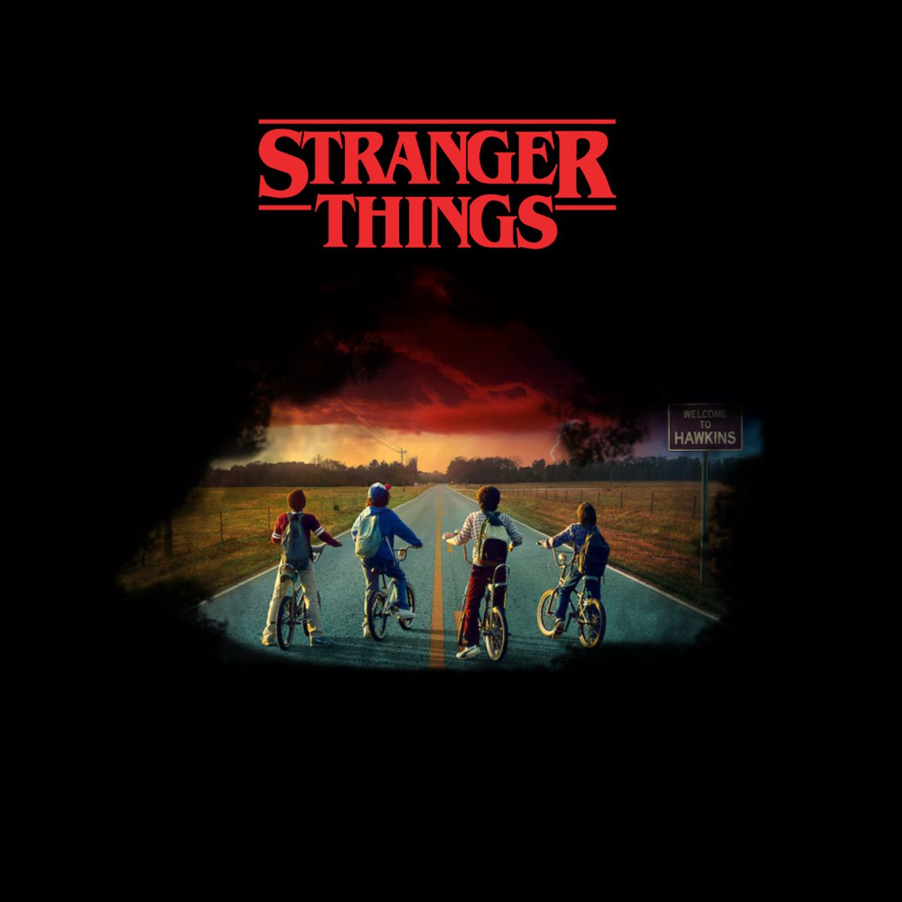

My Top 3 Movies/K-Series

Stranger Things 1 to 5
Mysteries unravel in a small Midwestern town in the 1980s, involving supernatural forces, secret experiments and one strange girl.
Twinkling Watermelon
In 2023, music-loving teen Eun Gyeol is transported to 1995, meets his father as a high schooler, and joins his band to reunite his future parents.

Taken 1 to 3
A former government operative comes out of retirement and uses all his extensive training to rescue his estranged daughter from a slave trade operation